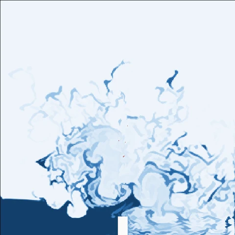
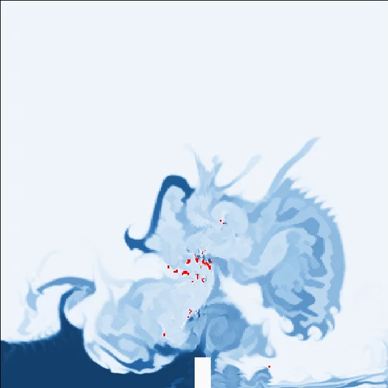
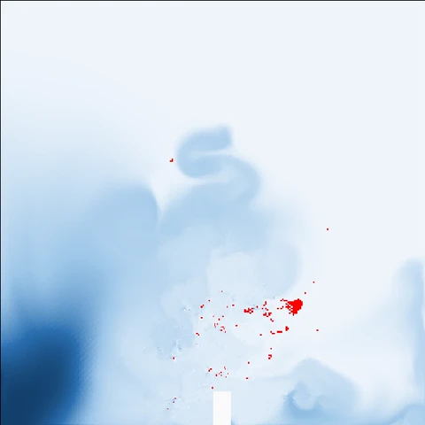
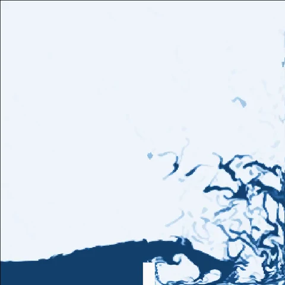
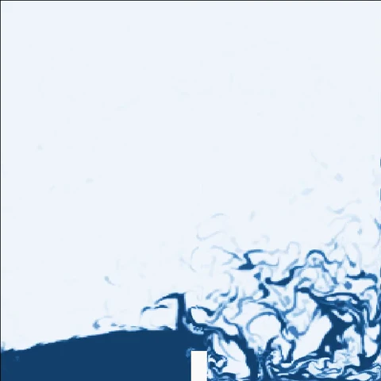

实验一 · nanochat
7 轮自主优化，在相同训练预算下提升模型表现
nanochat 是一个用于训练小型语言模型的开源项目。本实验固定使用一张 A800 GPU，每次训练限时 20 分钟。Raven 由 DeepSeek v4.1-flash 驱动，结合 ai4ai 插件，根据每轮结果自主修改训练脚本 train.py，再提交新一轮实验，共完成 7 轮迭代。
val_bpb，越低越好
官方 train.py 的基线为 0.9956；第 7 轮的最终方案达到 0.9381 ± 0.0007（3 个随机种子的均值 ± 标准差），相对降低 5.8%。
train.py 基线。将鼠标悬停在数据点上可查看详细数值。预算耗尽时，模型表现仍在改善
第 6、7 轮的 val_bpb 降幅均明显高于随机波动水平（0.0013），截至实验结束仍呈下降趋势。7 轮共执行 172 次训练，无崩溃记录，累计使用 3586 GPU 分钟，总预算为 3600 GPU 分钟。
如何理解 val_bpb
val_bpb 是验证集上的 bits per byte（每字节比特数），将模型预测文本的损失按字节数归一化。数值越低，表示模型对未见文本的预测表现越好。
最终方案相较于官方代码的 7 项改动
- 将每步训练批量减半（batch 219 → 218），使 20 分钟内的训练步数从 1540 增至 3055
- 为相邻 token 对引入可学习的哈希嵌入表，表大小为词表的 100 倍，共 819200 行
- 将该嵌入表的输出加入第 0 层之后的模型表示
- 将学习率
MATRIX_LR从 0.04 降至 0.02 - 将局部注意力窗口从 1024 缩短至 256
- 增加模型宽度：
ASPECT_RATIO64 → 80，对应宽度 512 → 640 - 将评估批量固定为 128
查看各轮最优方案
| 轮次 | 方案 | val_bpb | 种子数 | GPU 分钟 |
|---|
说明：最终方案目前仅使用 3 个随机种子评估，报告建议增至 7–8 个。模型加宽后，单步耗时增加约 30%，20 分钟内的训练步数从 3055 降至 2363，但 val_bpb 仍有所改善，反映了固定时间预算下的净收益。本实验以相较于上一轮最优方案满足 Welch |t| > 3 且 |Δ| > 0.002 作为有效改进的判据。第 1 轮的 9 个候选均未达标；从第 2 轮起，每轮均有新方案达到这一标准。
实验二 · CFD 溃坝模拟
提速失败后调整策略，逐轮降低数值误差
本实验使用开源计算流体力学（CFD）软件 OpenFOAM，模拟水柱坍塌并冲击侧壁的二维溃坝过程。Raven 在同一算例、81648 个网格单元上开展 7 轮实验（第 0–6 轮）。水体积分数 alpha 表示每个单元中水所占的比例，其物理取值范围为 [0, 1]；超出这一范围即为数值越界。
- 第 0 轮稳定配置，完成模拟

第 1 轮提速后在 t=0.4 终止
第 2 轮提速后在 t=0.5 终止
第 3 轮提速后在 t=0.65 终止
第 4 轮恢复稳定，完成模拟- 第 5 轮越界减小，界面更弥散

第 6 轮越界幅度最小
增大时间步长后，三轮模拟均提前终止
第 1–3 轮将 maxCo 从基线值 1 依次提高至 20、100、500，以允许更大的时间步长。越界单元数从基线的 0 个分别增至 241、3877、1241 个，三轮均未完成预定模拟时长。
恢复稳定配置后，越界幅度持续减小
第 4 轮将 maxCo 恢复为 1，完成模拟并保持水量守恒；第 5、6 轮继续调整界面计算参数，进一步减小越界幅度。第 4–6 轮仍存在约 1e-7 至 1e-10 量级的偏差，未满足 alpha 严格处于 [0, 1] 的判据，因此仍未通过验收。
查看各轮参数调整与结果
| 轮次 | 参数调整 | 结果 |
|---|
说明：本页的越界单元数与越界幅度均由可视化脚本从仿真场数据中提取。Raven 实验报告的测量位置不同，数值可能有所差异。第 4 轮记录的 alpha 最小值为 −1.97e-07，图中以越界幅度 1.97e-07 表示。
实验三 · FEA 悬臂梁仿真
8 轮载荷试验，逐步定位求解器的收敛边界
有限元分析（FEA）将结构划分为离散单元，以计算其受力和变形。本实验于 2026-08-17 使用开源求解器 CalculiX，对一端固定的悬臂梁施加载荷。随着载荷增加，求解过程可能无法收敛。Raven 先确定收敛与不收敛的载荷区间，再通过二分搜索逐步缩小范围。这里研究的是给定模型与求解设置下的数值收敛边界，不代表梁的物理承载极限。
确定初始区间，再二分搜索
第 0 轮在 2000 kN 下未收敛，第 1 轮降至 1800 kN 后收敛。随后，每轮取已知最大收敛载荷与最小不收敛载荷的中点进行测试。
将边界缩小至相邻测试载荷之间
1962.5 kN 下求解收敛，1965.625 kN 下未收敛。实验以“二分法收敛”结束，任务正常完成，全程保留了 107 条事件记录。
区分数值收敛与物理承载能力
根据材料与截面计算，梁的理论塑性极限载荷为 62.5 kN，远低于全部 8 轮的测试载荷。1962.5 kN 是本次搜索中求解器收敛的最大测试载荷，不能据此判断梁的承载能力。
查看各轮载荷与求解结果
| 轮次 | 载荷 (kN) | 结果 | 机时 |
|---|
实验四 · AI4AI 成本对比
低成本模型，也能支撑持续的研究探索
本组实验比较 Raven 和 Claude Code 搭配不同模型，在时间或成本约束下的研究表现。任务是使用 nanochat 预训练一个 5000 万参数的语言模型，以 BPB（每字节比特数，越低越好）评估，A800 基线为 1.108。本组采用独立的训练与预算设置，BPB 数值不宜与实验一直接比较。
- Raven · V4.1（低成本模型）
- Raven · 其他模型
- Claude Code · Opus 5（对照）
5 小时时间预算，不设成本上限
模型表现接近，成本约为 1/40。Raven 搭配 V4.1 的 BPB 为 1.037，成本为 $0.97；搭配 Opus 5 时，分别为 1.038 和 $39.41。Claude Code 搭配 Opus 5 的 BPB 为 1.053。
50 美元成本预算，不设时间上限
成本 $6.12，取得本组最低 BPB：0.965。Raven 搭配 V4.1 持续运行超过 80 小时，开展了更多轮探索；其余三组配置的成本均已接近 $50 的预算上限。
查看两种预算条件下的完整结果
| 框架 · 模型 | 耗时 | Token 数 | 成本 | BPB |
|---|
| 框架 · 模型 | 耗时 | Token 数 | 成本 | BPB |
|---|
Raven 为长期研究任务提供稳定的执行框架，
让每一步判断都有可核验的实验依据。
Raven 如何组织研究与实验
- 多智能体编排
- 各智能体按明确的交付要求协作，将代码实现与实验执行分开，以便独立核验结果。共享记忆保留研究上下文，减少重复信息与 token 开销。
- 研究检索（Research）
- 根据已检索到的证据判断任务难度，并结合预算和信息需求调整检索策略。
- 代码实现（Code）
- 代码完成后，安排独立测试与验收，并直接读取工具输出核实关键事实。
- 实验值守
- 自主提交任务、定期检查进展，并根据运行状态决定重试或终止；通过定时检查、心跳与会话保持机制支持长时间运行。
- ai4ai 研究流程
- 先调研并探索多个方向，再完成实现、验证和实测。根据结果形成结论，或继续深入有潜力的方向。
- 研究方案库
- 记录已尝试的方案及待探索的方向，为后续实验提供上下文，帮助 Raven 探索新思路、组合已有方法。